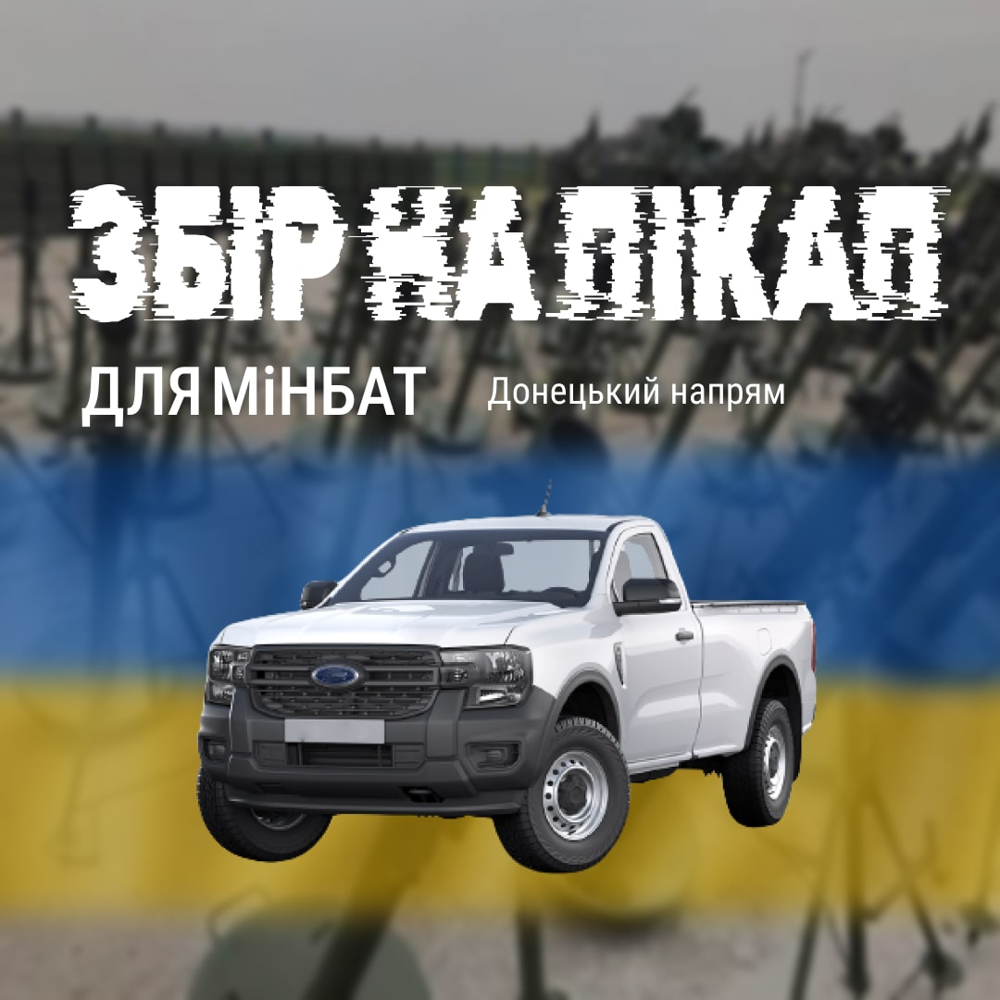

Fundraising for Mortar battery of NGU
-

Pick-up truck for Mortal Battery in Donetsk region of Ukraine
🎯Goal: 240 000.00 ₴
Thank you so much for your repost in social medias
Since our "war horse" has suffered incurable injuries, we are announcing a fundraiser for the Mortal Battery in the Donetsk region of Ukraine to purchase a new pick-up truck to protect Our sovereignty with you.
Any kind of help is needed: 1 hryvnia, share the post among friends, acquaintances, home chats, choosing a car, transportation to the Donetsk region, customs clearance, share among the people of the European Union, the United States of America, Japan, the Kingdom of Great Britain and all our allies.
With belief in you, Great People of the Cathedral, Unbreakable, United, Mighty and Wise Ukraine, everything will be GOOD for us.
Warriors of Mortar Battery DONATE NOW
DONATE NOW
💳Number of bank card:
5375 4112 1457 0553
IBAN (bank account)
UA 64 322001 00000 2620 6342 7918 76
Crypto
TRC: TW5eYxD8QKQcbZzzqh3BzHgG2qTPXMyrkB
ERC: 0x2b73478d5717b5b7d42d71e9f4f3e383b2d62885OR scan QR-code: